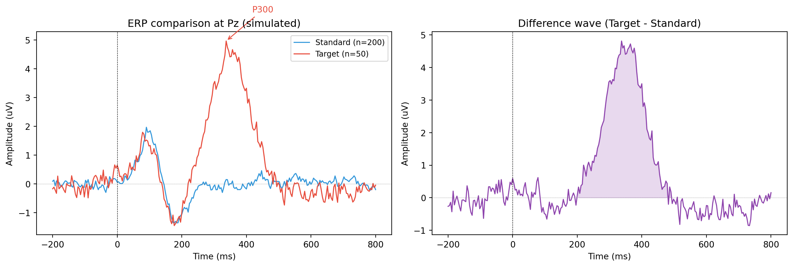

import mne
# Load data
raw = mne.io.read_raw_edf("recording.edf", preload=True)
raw.filter(l_freq=0.1, h_freq=30.0) # typical ERP filter settings
# Find events
events = mne.find_events(raw, stim_channel="STI 014")
event_id = {"standard": 1, "target": 2}
# Create epochs
epochs = mne.Epochs(raw, events, event_id=event_id,
tmin=-0.2, tmax=0.8,
baseline=(-0.2, 0),
reject=dict(eeg=100e-6), # reject if > 100 uV
preload=True)
# Average to create ERPs
erp_standard = epochs["standard"].average()
erp_target = epochs["target"].average()Event-related potentials (ERPs)
spectral
erp
What ERPs are, the signal-to-noise logic behind averaging, classic ERP components (P100, N170, P300, N400), plotting ERPs in MNE, topographic maps, difference waves, and grand averages across subjects.
Why this topic matters
When you present a stimulus to a person (a tone, a face, a word), their brain generates a small electrical response. This response is too small to see in a single trial because it is buried in ongoing brain activity and noise. But if you repeat the stimulus many times and average the EEG segments time-locked to each presentation, the noise cancels out and the consistent response emerges. This averaged waveform is the event-related potential, or ERP.
ERPs have been one of the primary tools in cognitive neuroscience for decades. They provide millisecond-level temporal resolution and can tell you when the brain distinguishes between two types of stimuli, even if the person cannot report the difference behaviourally. Classic ERP components have well-established functional interpretations, making them a bridge between neural activity and cognition.
The signal-to-noise argument
Why does averaging work? The ERP response to a stimulus is assumed to be roughly the same on every trial (the “signal”). The background EEG and other noise sources vary randomly from trial to trial. When you average \(N\) trials:
- The signal stays the same (because it is consistent).
- The noise decreases by a factor of \(\sqrt{N}\) (because random values tend to cancel).
The signal-to-noise ratio (SNR) therefore improves as \(\sqrt{N}\). With 100 trials, the SNR is 10 times better than a single trial. With 400 trials, it is 20 times better.
This is why ERP experiments need many repetitions per condition. A typical experiment uses at least 30–40 trials per condition, and many use 100 or more. Losing trials to artefact rejection is expected, so researchers usually plan for more trials than they strictly need.
There is a practical limit to how much averaging helps. After several hundred trials, the improvement per additional trial becomes small, and other sources of systematic error (drift, fatigue, habituation) start to dominate.
Classic ERP components
ERP components are named by their polarity (P for positive, N for negative) and their approximate latency in milliseconds. The polarity convention in EEG can be confusing: by tradition, many ERP plots show negative voltages upward (this is the neurophysiological convention). MNE plots with positive up by default.
P100 (P1)
- Latency: 80–120 ms after stimulus onset
- Polarity: positive
- Topography: occipital electrodes (O1, O2, Oz)
- Function: early visual processing. The P100 is the first major cortical response to a visual stimulus. It is modulated by spatial attention: attended stimuli produce a larger P100 than unattended stimuli.
N170
- Latency: 150–200 ms
- Polarity: negative
- Topography: occipitotemporal electrodes (P7, P8, PO7, PO8)
- Function: face processing. The N170 is larger for faces than for other object categories, and it is thought to reflect the structural encoding of face configurations. It is a workhorse component in face perception research.
P300 (P3)
- Latency: 300–600 ms
- Polarity: positive
- Topography: centroparietal electrodes (Pz, CPz)
- Function: stimulus evaluation and context updating. The P300 is elicited by rare, task-relevant stimuli in the “oddball” paradigm: you present a frequent stimulus (e.g., a low tone, 80% of trials) and a rare stimulus (e.g., a high tone, 20% of trials), and the rare one produces a large P300.
The P300 is one of the most studied ERP components in clinical neuroscience. Its amplitude and latency are affected by ageing, attention disorders, schizophrenia, and traumatic brain injury.
The P300 has two sub-components:
- P3a (frontal, 250–300 ms): elicited by novel, unexpected stimuli regardless of task relevance. Reflects involuntary attention capture.
- P3b (parietal, 300–600 ms): elicited by task-relevant rare stimuli. Reflects deliberate evaluation and working memory updating. This is the “classic” P300.
N400
- Latency: 300–500 ms
- Polarity: negative
- Topography: centroparietal electrodes (Cz, CPz, Pz)
- Function: semantic processing. The N400 is larger for semantically unexpected words. For example, “The cat sat on the dog” produces a larger N400 at “dog” than “The cat sat on the mat.” The N400 reflects the difficulty of integrating a word into its semantic context.
Creating ERPs in MNE
The basic workflow in MNE is: create epochs from events, then average to get an Evoked object.
Plotting ERPs
# Plot the ERP waveform at a single channel
erp_target.plot(picks="Pz", titles="Target ERP at Pz")
# Compare conditions at one channel
mne.viz.plot_compare_evokeds(
{"Standard": erp_standard, "Target": erp_target},
picks="Pz",
title="Standard vs Target at Pz"
)Topographic maps at specific time points
Topographic maps show the voltage distribution across the scalp at a particular moment. This is useful for verifying that an ERP component has the expected spatial distribution:
# Topographic maps at P300 latency
erp_target.plot_topomap(times=[0.1, 0.2, 0.3, 0.4, 0.5],
title="Target ERP topography")
# Joint plot: waveform + topographies
erp_target.plot_joint(times=[0.1, 0.3, 0.5])Difference waves
A difference wave is computed by subtracting the ERP for one condition from the ERP for another. This isolates the neural activity that differs between conditions and removes any shared activity (e.g., sensory processing common to both stimulus types).
# Compute the difference wave
diff = mne.combine_evoked([erp_target, erp_standard], weights=[1, -1])
# Plot the difference wave
diff.plot(picks="Pz", titles="Difference wave (Target - Standard)")
diff.plot_topomap(times=[0.3, 0.4, 0.5],
title="Difference topography")The P300 difference wave (target minus standard) should show a clear positive peak at centroparietal electrodes around 300–500 ms. If the difference wave is flat, either the P300 was not elicited, there were too few trials, or there is too much noise.
Grand averages across subjects
A grand average is the average of individual subjects’ ERPs. It provides a summary of the group-level response and is the standard way to present ERP results in publications.
# Assume evokeds_list is a list of Evoked objects, one per subject
grand_avg = mne.grand_average(evokeds_list)
grand_avg.plot(picks="Pz", titles="Grand average (N=20)")When computing grand averages, every subject must have the same channel layout and time axis. MNE’s grand_average() function checks for this and raises an error if the inputs are incompatible.
For statistical analysis, you should not test the grand average directly. Instead, extract the amplitude or latency of the ERP component for each subject and run your statistics on those values.
Working example: simulated P300
The code below simulates an oddball experiment with standard and target tones, generates ERPs for both conditions, and plots the comparison.
import numpy as np
import matplotlib.pyplot as plt
rng = np.random.default_rng(42)
# ── Simulation parameters ──────────────────────────────────
sfreq = 256
tmin, tmax = -0.2, 0.8
n_times = int((tmax - tmin) * sfreq)
times = np.linspace(tmin, tmax, n_times)
n_standard = 200
n_target = 50
def make_erp_trial(times, sfreq, component_params, rng):
"""Generate a single ERP trial with Gaussian components + noise."""
trial = np.zeros_like(times)
# Add each ERP component
for latency, amplitude, width in component_params:
# Add some jitter to latency
jittered_lat = latency + rng.normal(0, 0.015)
trial += amplitude * np.exp(-((times - jittered_lat)**2)
/ (2 * width**2))
# Add pink noise
white = rng.standard_normal(len(times))
freqs_fft = np.fft.rfftfreq(len(times), d=1 / sfreq)
freqs_fft[0] = 1
pink = np.fft.irfft(
np.fft.rfft(white) / np.sqrt(freqs_fft), n=len(times)
)
trial += 2.0 * pink / pink.std()
return trial
# ── Define components ──────────────────────────────────────
# (latency in s, amplitude in uV, width in s)
standard_components = [
(0.10, 2.0, 0.025), # P100
(0.18, -1.5, 0.030), # N200
]
target_components = [
(0.10, 2.0, 0.025), # P100 (same as standard)
(0.18, -1.5, 0.030), # N200 (same as standard)
(0.35, 5.0, 0.060), # P300 (target only)
]
# ── Generate trials ───────────────────────────────────────
standards = np.array([make_erp_trial(times, sfreq,
standard_components, rng)
for _ in range(n_standard)])
targets = np.array([make_erp_trial(times, sfreq,
target_components, rng)
for _ in range(n_target)])
# ── Average (ERP) ─────────────────────────────────────────
erp_standard = standards.mean(axis=0)
erp_target = targets.mean(axis=0)
diff_wave = erp_target - erp_standard
# ── Baseline correction ───────────────────────────────────
bl_mask = (times >= -0.2) & (times <= 0)
erp_standard -= erp_standard[bl_mask].mean()
erp_target -= erp_target[bl_mask].mean()
diff_wave -= diff_wave[bl_mask].mean()
# ── Plot ──────────────────────────────────────────────────
fig, axes = plt.subplots(1, 2, figsize=(13, 4.5))
# Left: condition comparison
ax = axes[0]
ax.plot(times * 1000, erp_standard, color="#3498db", linewidth=1.2,
label=f"Standard (n={n_standard})")
ax.plot(times * 1000, erp_target, color="#e74c3c", linewidth=1.2,
label=f"Target (n={n_target})")
ax.axvline(0, color="black", linestyle="--", linewidth=0.5)
ax.axhline(0, color="grey", linestyle=":", linewidth=0.5)
ax.set_xlabel("Time (ms)")
ax.set_ylabel("Amplitude (uV)")
ax.set_title("ERP comparison at Pz (simulated)")
ax.legend(fontsize=9)
# Annotate P300
p300_idx = np.argmax(erp_target[(times > 0.25) & (times < 0.5)])
p300_time = times[(times > 0.25) & (times < 0.5)][p300_idx]
p300_amp = erp_target[(times > 0.25) & (times < 0.5)][p300_idx]
ax.annotate("P300", xy=(p300_time * 1000, p300_amp),
xytext=(p300_time * 1000 + 80, p300_amp + 1),
fontsize=10, color="#e74c3c",
arrowprops=dict(arrowstyle="->", color="#e74c3c"))
# Right: difference wave
ax = axes[1]
ax.plot(times * 1000, diff_wave, color="#8e44ad", linewidth=1.2)
ax.fill_between(times * 1000, 0, diff_wave,
where=(diff_wave > 0) & (times > 0.2),
color="#8e44ad", alpha=0.2)
ax.axvline(0, color="black", linestyle="--", linewidth=0.5)
ax.axhline(0, color="grey", linestyle=":", linewidth=0.5)
ax.set_xlabel("Time (ms)")
ax.set_ylabel("Amplitude (uV)")
ax.set_title("Difference wave (Target - Standard)")
plt.tight_layout()
plt.show()
In the left panel, both conditions share an early positive peak around 100 ms (P100), but only the target condition shows the large positive deflection peaking around 350 ms (the P300). The right panel shows the difference wave, which isolates the P300 by removing the shared early components. The shaded area highlights the P300 time window.
In real oddball experiments, the P300 amplitude typically ranges from 5 to 20 \(\mu V\), depending on factors like task difficulty, the ratio of standard to target stimuli, and the participant’s level of attention.
Key takeaways
- ERPs are averaged EEG waveforms time-locked to events. Averaging works because the consistent signal survives while random noise cancels out. The SNR improves as \(\sqrt{N}\), where \(N\) is the number of trials.
- Classic ERP components include P100 (early visual processing), N170 (face processing), P300 (stimulus evaluation in oddball tasks), and N400 (semantic processing). Each has a characteristic latency, polarity, and scalp topography.
- In MNE, create
Epochsfrom events, then call.average()to get anEvokedobject. Useevoked.plot()for waveforms,evoked.plot_topomap()for scalp maps at specific times, andplot_compare_evokeds()to overlay conditions. - Difference waves (subtracting one condition from another) isolate the neural activity that differs between conditions and remove shared components.
- Grand averages across subjects summarise group-level results. For statistical testing, extract component amplitudes or latencies from individual subjects and analyse those values, rather than testing the grand average directly.
- The P300 is one of the most clinically useful ERP components. Its amplitude and latency are sensitive to attention, ageing, and several neurological and psychiatric conditions.